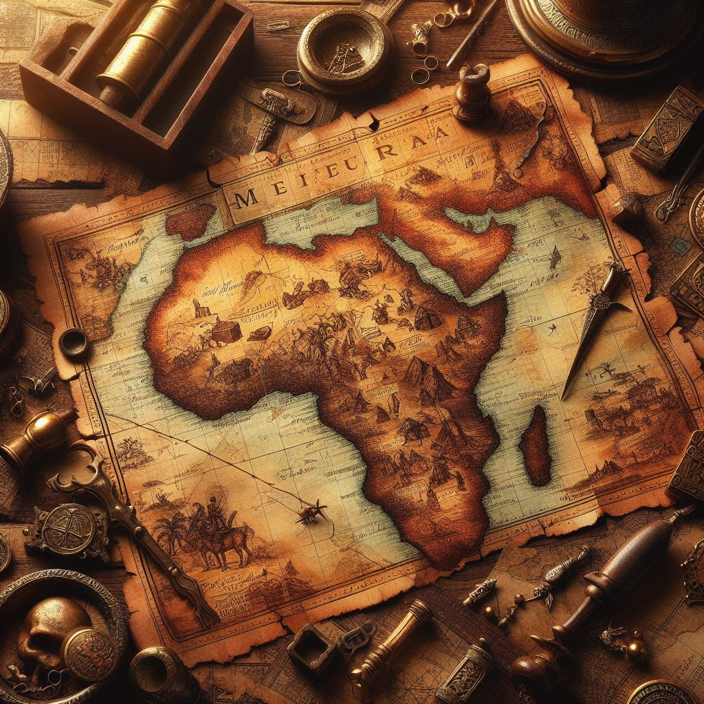
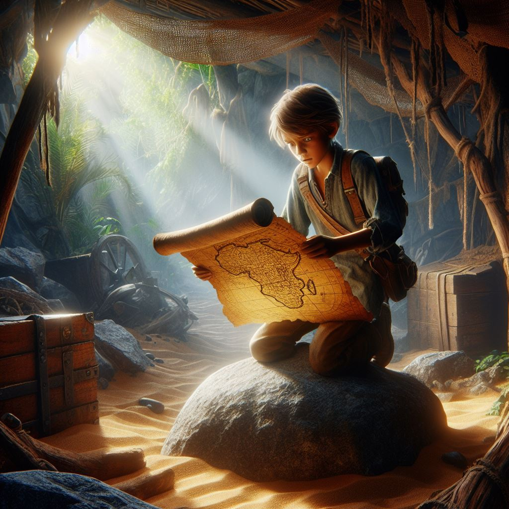
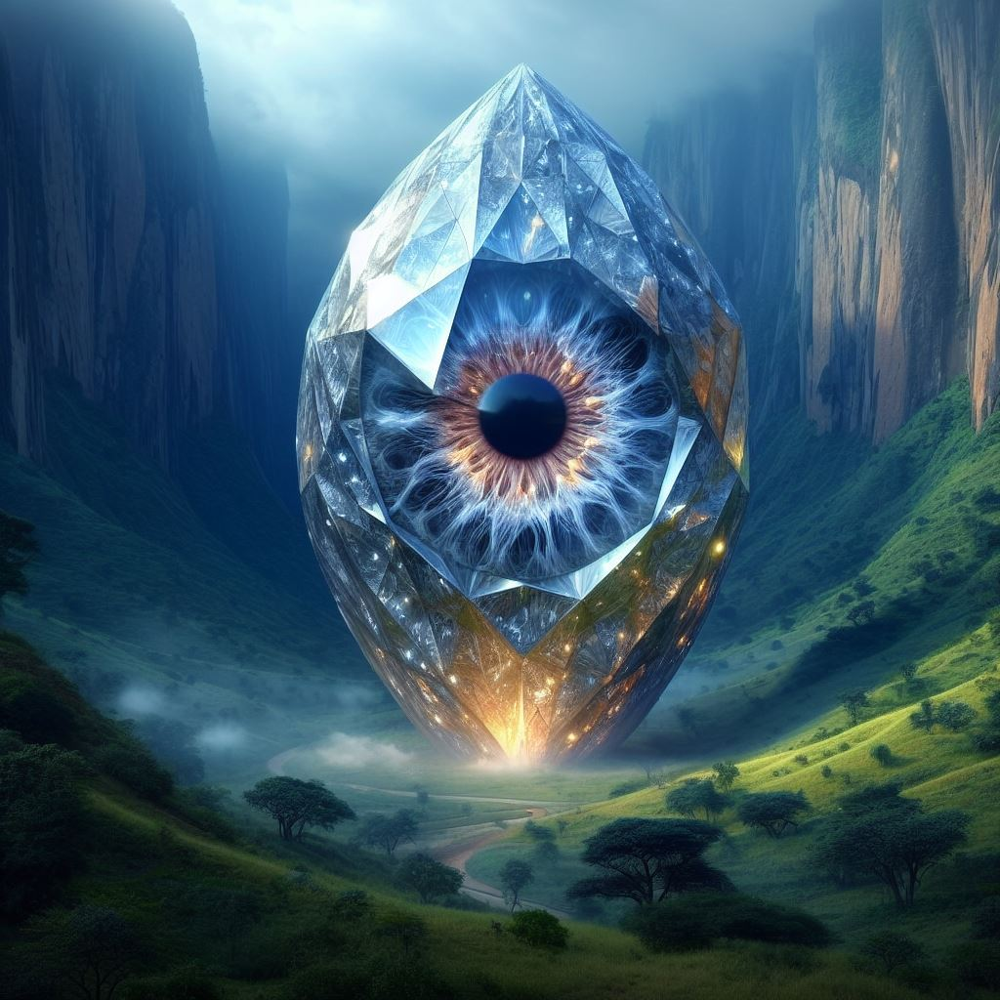

В сърцето на Африка, където слънцето печеше безмилостно и саваната се простираше докъдето стигаше окото, живееше млад мъж на име Джак. Той беше авантюрист по душа, винаги жадуващ за следващото голямо приключение. Висок и строен, със златиста коса и сини очи, той имаше излъчване на несломим дух. Един ден, докато изследвал неизследвана територия близо до границата на Танзания, Джак се натъкнал на древна карта, скрита в тайник зад скала. Картата изглеждаше стара и износена, но все още можеше да се разчете. На нея бяха отбелязани различни съкровища и артефакти, скрити из цяла Източна Африка. Един конкретен предмет привлече вниманието на Джак - легендарният диамант „Окото на Ксимбане“, за който се казваше, че притежава мистични сили. Заинтригуван от възможността да открие такова могъщо съкровище, Джак реши да последва картата. Той опакова екипировката си, каза сбогом на приятелите си и тръгна на пътешествие, което щеше да го отведе далеч отвъд познатите граници.
  